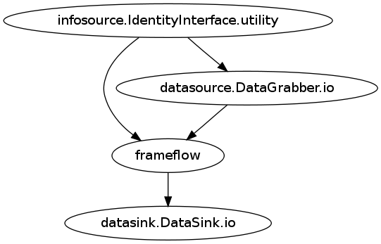
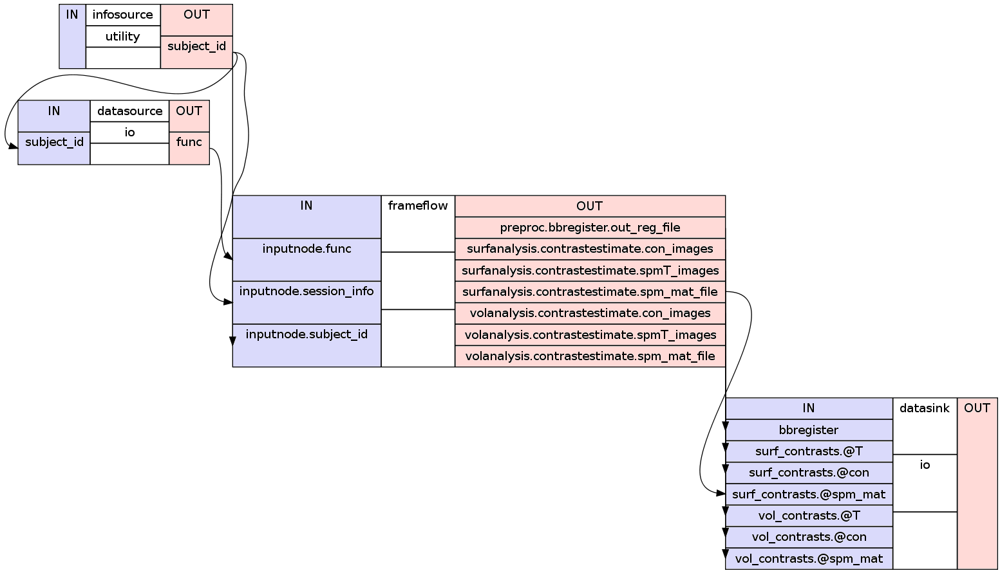
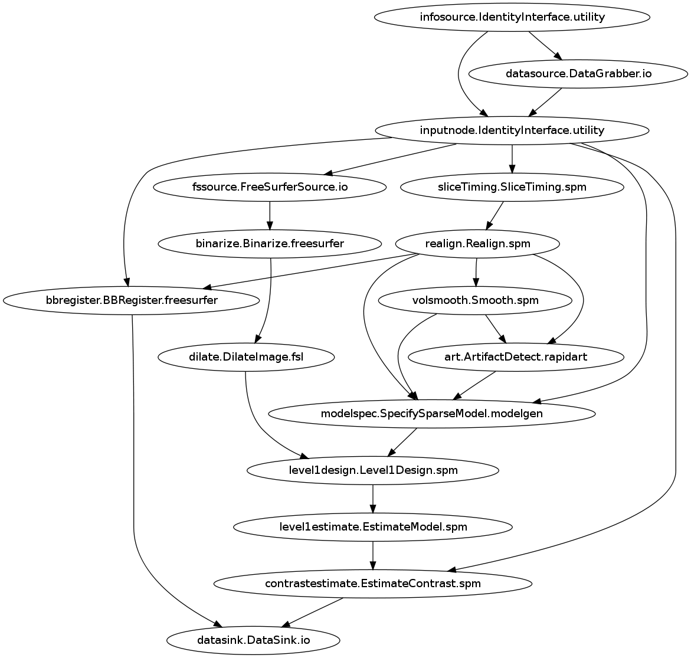
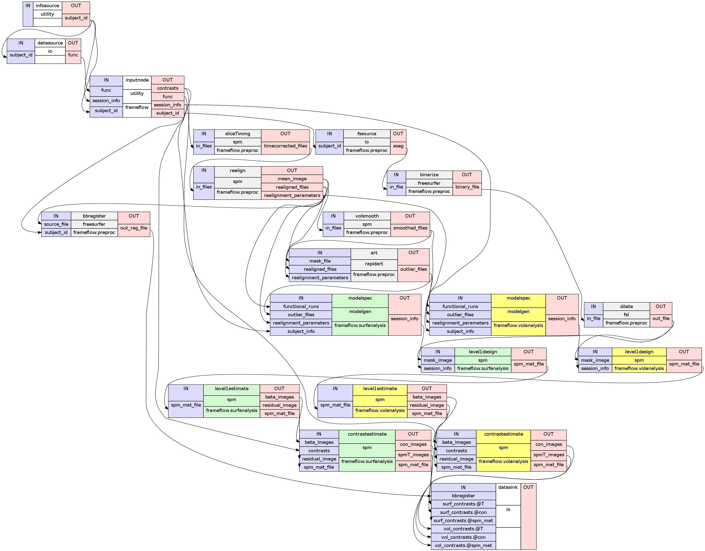
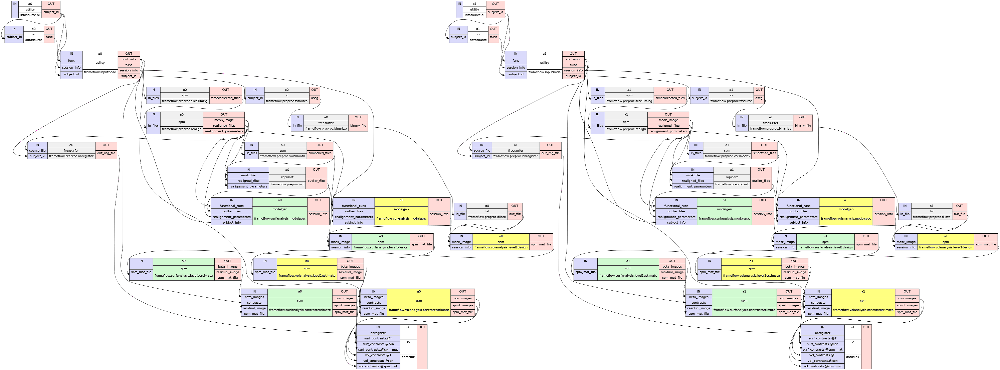

After the connection of all nodes of a pipeline is established we are able to use the write_graph() method of the workflow and create a graph. Such a graph gives us a very good overview of our pipeline. For the example in the previous chapter, the command would be:
1 | metaflow.write_graph(graph2use='flat')
|
Nipype can create four different kinds of graphs by setting the variable graph2use to the following parameters:
All versions create two graph files except the hierarchical one. The difference of those two files is in the level of detail they are showing. There is a simple overview graph called graph.dot that shows you the basic connections between nodes and a more detailed overview graph called graph_detailed.dot that shows you additionally the outputs and inputs of each node and the connections between them. The hierarchical graph on the other side creates only a simple overview graph. But its iterable nodes are marked in a different gray tone and subgraphs are surrounded by a square to show their range.
Note
The graph files can be found in the highest pipeline folder of your working directory.
If graphviz is installed the dot files will automatically be converted into png-files. Otherwise you can take the dot files and load them in a graphviz visualizer elsewhere.
The following graphs are a visualization of the first level analysis pipeline or metaflow which you will encounter in the chapter: How To Build A First Level Pipeline
This is the simple graph of the orig version and shows as an example the metaflow which you will encounter in a latter chapter. The name of the nodes is composed in the format of nodename.algorithm.interface. Because this version of graphs only shows the highest workflow all the subgraphs contained in the frameflow are hidden.
This detailed graph of the orig version shows the metaflow from the simple graph above but with a bit more informations. Now you can see which input of which node is connected to another. Because the subworkflow of the frameflow are hidden you only see what inputs and outputs go into this frameflow but not more.
This simple graph of the flat version shows the metaflow. You can see now that the frameflow was expanded by its subnodes.
But this version still doesn’t show you if there are different kinds of subworkflows.
This detailed graph of the flat version shows the metaflow. You can see now all nodes, their inputs and outputs and how they are connected to each other.
In this version you also see that the that the frameflow has actually three subworkflows called preproc, surfanalysis and volanalysis.
This graph doesn’t show you anything different than the simple graph of the flat version.
This detailed graph of the exec version shows the metaflow. You can see that you get the same level of detail as if you would run it with flat but all iterables are expandend so that you can see all the nodes that would be processed in parallel are shown at once.
In this case the infosource node iterates over subject1 and subject2.
Note
As you can see from this graph every iteration creates a subgraph with its own index, in this case a0 and a1. Because the iteration of this workflow starts with the infosource node, the indexing already starts there.
This graph of the hierarchical version shows the metaflow. This graph doesn’t show you the inputs and outputs of each node, but it shows you how many connections exist between nodes and it surrounds each workflow with its own box to support a clear separation of the subworkflows.

In this example you clearly see that the metaflow contains a frameflow which itself contains three subworkflows preproc, volanalysis and surfanalysis.
Note
The coloration of this graphs was done manually and don’t get created by nipype itself.